jvm 调优
- TAGS: Linux
jvm 调优
JVM原理
什么是jvm
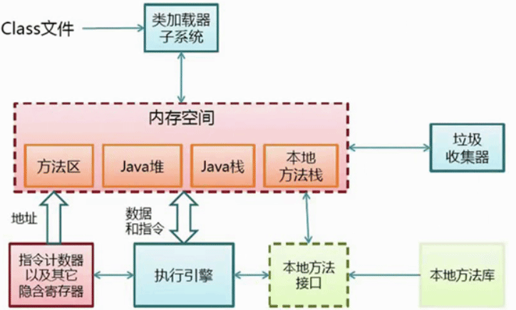
JVM是按照运行时数据的存储结构来划分内存结构，JVM在运行java程序时，将它们划分成几种不同格式的 数据，分别存储在不同的区域，这些数据统一称为运行时数据。运行时数据包括java程序本身的数据信息和 JVM运行java需要的额外数据信息
运行区：如上图，类加载器子系统下都是属性运行区
JMM java的内存模型
JMM会造成线程安全问题，预料结果和运行结果不一样。它会把内存为2个区域
主内存：
工作内存：每个java栈私有的，把主内存的东西放到工作内存中做计算，再把计算的结果回写过去。
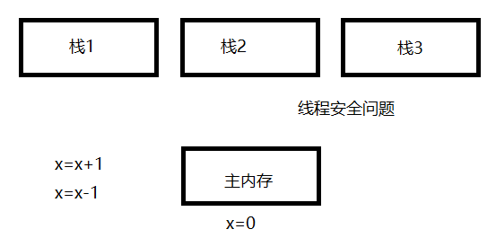
jvm运行时数据区
线程私有，即每个线程都会有一个，线程之间互不影响，独立存储。
线程公用
- 程序计数器—线程私有
- 程序执行的位置计数，当前线程所执行字节码的行号
- java虚拟机栈—线程私有
首先应该想到数据结构
描述的是java方法执行的内存模型：每个方法在执行的同时多会创建一个栈帧 用于存储局部变量表、操作数栈、动态链表、方法出口等信息。 每个方法从 调用直至完成过程，就对应着一个栈帧在虚拟机中入栈到出栈的过程。局部变 量表存放了编译期可知的各种基本数据和对象引用，所需内存空间在编译期确 定。
-Xoss参数设置本地方法栈大小（对于HotSpot无效）
-Xss参数设置栈容量 例： -Xss128k
- 本地方法栈—线程私有
操作系统本身 的 操作系统，同虚拟机栈，只不过本地方法 栈位虚拟机使用到的native方法服务。
Sun HotSpot虚拟机把本地方法栈和虚拟机栈合二为一。
- java堆—线程公用
- 平时说的java调优就是这块
- 方法区—线程公用
java的一些代码元素符等
用于存储已被虚拟机加载的类信息、常量、静态变量、即使编译后的代码等数据。
别名永久代（Permanent Generation）
-XX:MaxPermSize设置上限
-XX:PermSize设置最小值 例：VM Args:-XX:PermSize=10M -XX:MaxPermSize=10M
运行时常量池(Runtime Constant Pool)是方法区的一部分。
Class文件中除了有类的版本、字段、方法、接口等信息外，还有一项是常量 池（Constant Pool Table）,用于存放编译期生成的各种字面量和符号引用， 这部分内容将在类加载后进入方法区的运行时常量池中存放。运行时常量池相 对于Class文件常量池的一个重要特征是具备动态性：即除了Class文件中常量 池的内容能被放到运行时常量池外，运行期间也可能将新的常量放入池中，比 如String类的intern（）方法
- 直接内存
直接内存并不是虚拟机运行时数据区的一部分。
在NIO中，引入了一种基于通道和缓冲区的I/O方式，它可以使用native函数直接分配堆外内存，然后通过一个存储
在java堆中的DirectByteBuffer对象作为这块内存的引用进行操作。
-XX:MaxDirectMemorySize设置最大值，默认与java堆最大值一样。
例：-XX:MaxDirectMemorySize=10M -Xmx20M
对于32位操作系统来说，系统最大内存为4G。
系统给每个进程的内存是有限制的，譬如32位的windows 限制为2G
JVM内在分配
栈内在分配， 堆内在分配， 初始化时内存分配
栈内存分配：
保存参数、局部变量、中间计算过程和其他数据。退出方法的时候，修改栈顶指针就可以把栈帧中的内容销毁。
-Xss 默认1MB，
栈的优点：存取速度比堆快，仅次于寄存器，栈数据可以共享。
栈的缺点：存在栈中的数据大小、生存期是在编译时就确定的，导致其缺乏灵活性。
堆内存分配：(大部分调整这个参数)
堆里有保存的一些对象，对象中保存了一些值。
堆的优点：动态地分配内存大小，生存期不必事先告诉编译器，它是在运行期动态分配的，垃圾回收器会自动收走不再使用的空间区域。
堆的缺点：运行时动态分配内存，在分配和销毁时都要占用时间，因此堆的效率较低。
JVM 堆结构

why划分几个代？： IBM统计80%的对象用完就丢了，但有一些对象的引用从生到死都回收不了的，所以给划分了几个代，针对不同区域进行优化
yong新生代：E区(Eden)，初创对象。存活区(Survivor)： s0 s1指from to 中的任何一个区域。
old老年代：
permanent持久代：存放了一些class类，字节码

java堆结构和垃圾回收
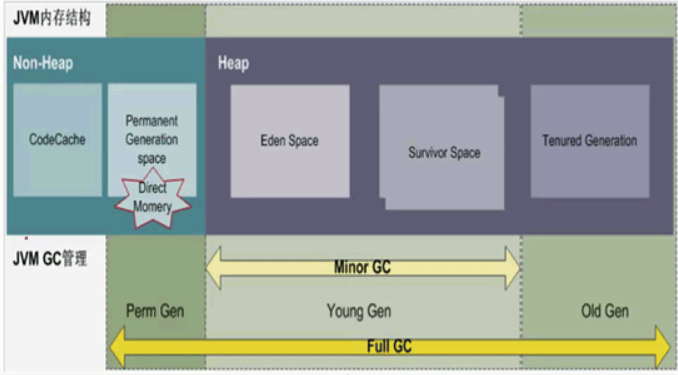
如图： Non-Heap 非堆区域，Heap堆区域，JVM GC管理 垃圾回收区域
Heap有
Eden Space 新生代 Survivor Space 存活区 Tenured Generation 老年代
Non-Heap有
CodeCache 存放字节码，比如类的信息 Permanent Generation space 方法区(持久代) Direct Momery直接内存
JVM GC管理有
Minor GC： 新生代垃圾回 FULL GC： 整个回收 需要避免 注意：GC 只要一工作别的应该就暂停，用户直面的反应就是 "卡了"，暂停的时间长短有所不同
JVM堆配置参数
1 -Xms 初始堆大小
默认物理内存的1/64(<1GB)，可根据实际情况调整
2 -Xmx最大堆大小
默认物理内存的1/4（<1GB），实际中建议不大于4GB。 一但大于4GB可以多开几个进程
内存泄漏 和 内存溢出 严格意义上不是一个问题， 内存泄漏可能是代码问题，也可能是内存不够大。比如读20G的大文件内存只分配了1G，这就会内存溢出了，但跟程序代码是 没有关系的。比如10G的内存用到了引用 GC回收不了，日积月累就会出现内存泄漏。
3 一般建议设置 -Xms = -Xmx
好处是避免每次在gc后，调整堆的大小，减少系统内存分配开销。
4 整个堆大小=年轻代大小 + 年老代大小 +持久代大小
spring框架里有大量的反射，这个区一般是256M，有时会通过反射的方式加载本 地的相关的class程序，方法区可能会满，扩大到512M可解决80%的问题。
5 -XX:+HeapDumpOnOutOfMemoryError可以让虚拟机在出现内存溢出是dump出当前的内存堆转储快照
jvm新生代（yong generation)
1 新生代=1个edem区+2个Survivor区
2 -Xmn 年轻代大小(1.4 or later)
-XX:NewSize, -XX:MaxNewSize (设置年轻代大小（for 1.3/1.4)) 默认值大小为整个堆的3/8
3 -XX:NewRatio 很少使用
年轻代(包括Eden和两个Survivor区)与年老代的比值(除去持久代) 默认为2 Xms=Xmx并且设置了Xmn的情况下，该参数 不需要进行设置。 比如：整个堆100M ，持久代10M，-XX:NewRatio=7的话，就在100-10=90M中 进行分配年轻代与年老代比值=1/7
4 -XX:SurvivorRatio 调优很少使用
Eden区与Survivor区的大小比值，设置为8, 则两个Survivor区与一个Eden区的比值为2：8，一个Survivor区占整个 年轻代的1/10
5 用来存放JVM刚分配的Java对象
java老年代（tenured generation)
1 老年代=整个堆 - 年轻代大小 - 持久代大小
2 年轻代中经过垃圾回收没有回收掉的对象被复制到年老代。
大的对象包括缓存，
3 老年代存储对象比年轻代年龄大的多，而且不乏大对象。
4 新建的对象也有可能直接进入老年代
4.1 大对象，可通过启动参数设置-XX:PretenureSizeThreshold=1024 (单位为字节，默认为0）来代表超过多大 时就不在新生代分配，而是直接在老年代分配。建议不要这么做，如果弱引用可能出现FULL GC 等待一段时间就好了，强引用可能出现 FULL GC 服务硬死掉- -
4.2 大的数组对象，且数组中无引用外部对象。
5 老年代大小无配置参数
java持久代(perm generation)
持久代多种叫法 方法区
1 持久代=整个堆 - 年轻代大小 - 老年代大小
2 -XX:PermSize -XX:MaxPermSize
设置持久代大小，一般情况推荐把-XX:PermSize设置成XX:MaxPermSize的值为相同的值，因为永久代大小的 调整也会导致堆内存需要触发fgc。
3 存放Class、Method元信息，其大小与项目的规模、类、方法的数量有关。一般设置为128M就足够了，设置 原则是预留30%的空间。
4 永久代的回收方式
4.1 常量池中的常量，无用的类信息，常量的回收很简单，没有引用了就可以被回收
4.2 对于无用的类进行回收，必须保证3点：类的所有实例都已经被回收；加载类的ClassLoader已经被回收；
jvm内存垃圾回收
程序计数器、虚拟机栈、本地方法栈3个区域随线程生，随线程而灭；
栈中的栈帧随着方法的进入和退出而有条不紊的执行这出栈和入栈操作。
每一个栈帧中分配多少内存基本上是在类结构确定下来是就已知的，因此这几个区域的内存分配和回收都具备确定性， 在这几个区域内不需要过多考虑回收问题，因为方法结束或者线程结束时，内存就跟着回收了。
jvm垃圾收集算法
1 引用计数算法(jdk1.2 前的算法，现基本被抛弃了)
原理：每个对象有一个引用计数属性，新增一个引用时计数加1，引用释放时计数减1，计数为0时可以回收。
缺点：此方法简单，无法解决对象相互循环引用的问题。还有一个问题量如何解决精准计数。
2 根搜索算法
原理：从GC Roots开始向下搜索，搜索所走过的路径称为引用链。当一个对象到GC Roots没有任何引用链相连时， 则证明此对象量不可用的。不可达对象。
在Java语言中，GC Roots包括：
虚拟机栈(栈帧中的本地变量表)中引用的对象。
方法区中类静态属性实体引用 的对象。
方法区中常量引用的对象。
本地方法栈中JNI引用的对象 。
jvm垃圾回收算法
1 复制算法(Copying)
2 标记清除算法(Mark-Sweep)
3 标记整理压缩算法(Mark-Compac)
复制算法(Copying)
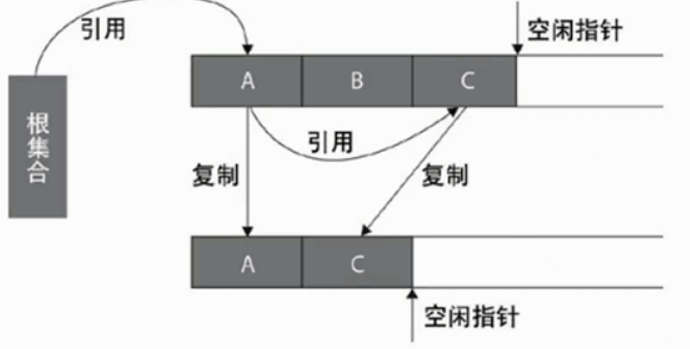
原理：采用从根集合扫描，并将存活对象复制到一块新的，没有使用过的空间中，这种算法当控件存活的对象比较少时，极为高效，
缺点：但是带来的成本是需要一块内存交换空间用于进行对象的移动。需要复制，效率降低、浪费空间。
此算法用于新生代内存回收，从E区回收到S0或者S1
标记清除算法(Mark-Sweep)
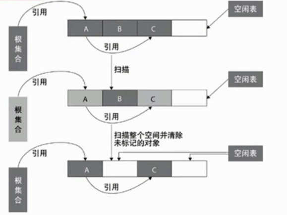
原理：首先标记出所有需要回收的对象，在标记完成后统一回收所有被标记的对象。 适合于old区回收
标记-清除算法采用从根集合进行扫描，对存活的对象对象标记，标记完毕后，再扫描整个空间中末被标记的对象，进行回收，如图所示。
优点：不需要进行对象移动，并且仅对不存活的对象进行处理，在存活对象比较多的情况下极为高效，但由于标记-清除算法直接回收不存活的对象，因此会造成
缺点：容易产生内在碎片。
标记整理压缩算法(Mark-Compac)

原理：似于标记-清除，但后续步骤不是直接对可回收对象进行清理，而是让所有存活对象都向一端移动，然后直接清理掉端边界以外的内存
标记-整理算法采用标记-清除算法一样的方式进行对象的标记，但在清除时不同，在回收不存活的对象的空间后，会将所有的存活对象往左端空闲空间移动
缺点：因此成本更高 ，但是却解决了内存碎片的问题。
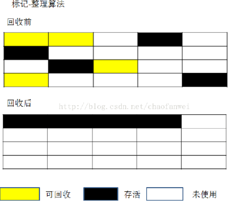
分代收集算法（Generational Collection）
原理：根据对象存活周期的不同将内存划分为几块。一般是java堆分为新生代和老年代，这样就可以根据各个年代的特点采用合适的收集算法
回收方法区
方法区的垃圾回收主要回收两部分：废弃常量和无用的类。
回收废弃常量和java堆中的对象非常类似。当没有对象引用它时即可回收。
回收无用的类则比较苛刻：
该类所有的实例都已经被回收，即java堆中不存在该类的任何实例。 加载该类的ClassLoader已经被回收。 该类对应的java.lang.Class对象没有在任何地方被引用。
垃圾收集打印参数
-XX:+PrintGCApplicationStoppedTime 参数打印gc停顿时间 -XX:+PrintGCDateStamps 参数打印gc时间戳，系统时间 -XX:+PrintGCTimeStamps 参数打印gc时间，相对于jvm启动时间 -Xloggc:gclog.log 设置gc日志文件 -XX:+PrintReferenceGC 打印gc引用 -XX:+PrintGCApplicationConcurrentTime 打印每次垃圾回收前，程序未中断的执行时间 -XX:+PrintHeapAtGC 打印GC前后的详细堆栈信息 ##elasticsearch中jvm log配置 # GC logging options if [ -n "$ES_GC_LOG_FILE" ]; then JAVA_OPTS="$JAVA_OPTS -XX:+PrintGCDetails" 每次GC时打印详细信息 JAVA_OPTS="$JAVA_OPTS -XX:+PrintGCTimeStamps" 打印每次GC的时间戳 JAVA_OPTS="$JAVA_OPTS -XX:+PrintGCDateStamps" 参数打印gc时间戳，系统时间 JAVA_OPTS="$JAVA_OPTS -XX:+PrintClassHistogram" 遇到Ctrl-Break后打印类实例的柱状信息，与jmap -histo功能相同 JAVA_OPTS="$JAVA_OPTS -XX:+PrintTenuringDistribution" 指定JVM 在每次新生代GC时，输出幸存区中对象的年龄分布 JAVA_OPTS="$JAVA_OPTS -XX:+PrintGCApplicationStoppedTime" 输出GC造成应用暂停的时间 JAVA_OPTS="$JAVA_OPTS -Xloggc:$ES_GC_LOG_FILE" # Ensure that the directory for the log file exists: the JVM will not create it. mkdir -p "`dirname \"$ES_GC_LOG_FILE\"`" fi
如：
JAVA_OPTS="-Xms300m -Xmx300m -verbose:gc -XX:+PrintGCDateStamps -XX:+PrintGCDetails -Xloggc:${CATALINA_HOME}/logs/hd-server-gc.log -Dapollo.cluster=local"
JVM常见垃圾回收器
名词解释：
- 串行回收 ： GC单线程内存回收、会暂停所有用户线程； GC跑，用户暂停
- 并行回收： 收集是指多个GC线程并行工作，但此时用户线程是暂停的；所以，Serial是串行的，Paralle收集器是并行的，而CMS收集器是并发的。GC跑，用户暂停
- 并发回收： 是指用户 线程与GC线程同时执行(不一定是并行，可能交替，但总体上是在同时执行的)，不需要停顿用户线程（其实在CMS中用户线程还是需要停顿的，只是非常短，GC线程在另一个CPU执行）；GC跑，用户跑
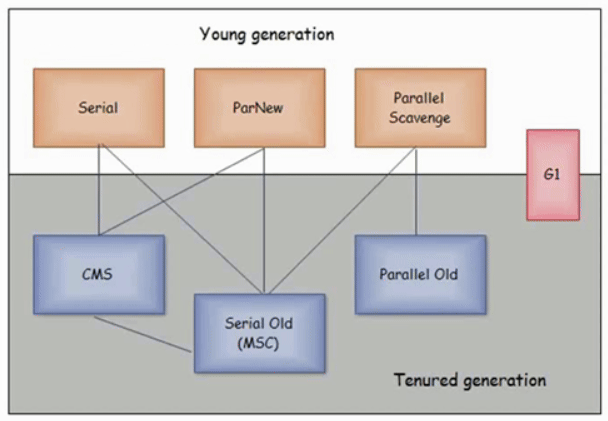
上图是HotSpot里的收集器，中间的横线表示分代，有连线表示可以组合使用。
Serial 回收器（串行回收器）
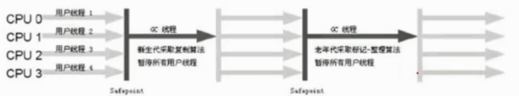
- 是一个单线程的收集器，只能使用一个CPU或一条线程去完成垃圾收集；在进行垃圾收集时，必须停止其它工作的线程，直到收集完成。采用复制算法。
- 缺点：Stop-The-Worl
- 优点：简单。对于单CPU的情况，由于没有多线程交互开销，反而可以更高效。是Clien模式下默认的新生代收集器。
新生代Serial回收器
- -XX:+UseSerialGC 来开启。 Serial New+ Serial Old 的收集器组合进行内存回收。
- 采用复制算法
- 独占式的垃圾回收。一个线程进行GC，串行。其它工作线程暂停。
老年代Serial回收器
- -XX:+UseSerialGC 来开启。Serial New+ Serial Old 的收集器组合进行内存回收。
- 使用标记-压缩算法
- 串行的、独占式的垃圾回收器。因为内存比较大原因，回收比新生代慢。
ParNew回收器(并行回收器)
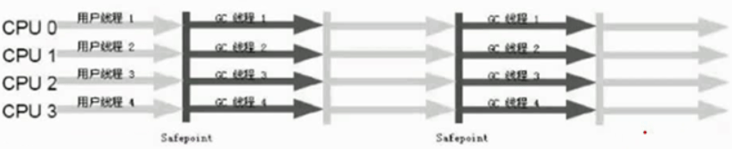
并行回收器也是独占式的回收器，在收集过程中，应用程序会全部暂停。但由于并行回收器使用多线程进行垃圾回收， 因此，在并发能力比较强的CPU上，它产生的停顿时间要短于串行回收器，而在单CPU或者并发能力较弱的系统中， 并行回收器的效果不比串行回收器好，由于多线程压力，它的实际表现能力很可能比串行回收器差。
新生代ParNew回收器
- -XX:+UseParNewGC 开启。 新生代使用并行回收收集器，老年代使用串行收集器。
- -XX:ParallelGCThreads 指定线程数。默认最好与CPU数量相当，避免过多的线程影响垃圾收集性能。
- 采用复制算法
- 并行的、独占式的垃圾回收器。
新生代 Paralle Scavenge收集器
- 吞吐量优先回收器。关注CPU吞吐量，即运行用户代码的时间/总时间， 比如： JVM运行100分钟，其中运行用户代码99分钟，垃圾收集1分钟，则吞吐量是99%，这种收集器能最高效率的利用CPU，适合运行后台运算。
- -XX:+UseParallelGC 开启。 使用Parallel Scavenge+Serial Old 收集器组合回收垃圾，这也是在Server 模式下的默认值。
- -XX:GCTimeRatio 来设置用户执行时间占总时间的比例，默认99，即1%的时间用来进行垃圾回收。
- -XX:MaxGCPauseMillis 设置GC最大停顿时间 。
- 使用复制算法
老生代 Paralle Scavenge收集器
- -XX:+UseParallelOldGC 开启。使用Parallel Scavene + Parallel Old组合收集器进行收集
- 使用标记整理算法
- 并行的、独占式的垃圾收集器。
CMS（并发标记清除）回收器
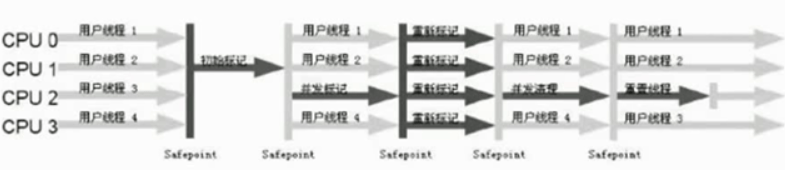
运行过程分为4 个阶段：
初始标记（CMS initial mark）: 值标记GC Roots能直接关联到的对象 。 并发标记（CMS concurrent mark）：进行GC Roots Tracing 的过程。 重新标记（CMS remark）：修正并发标记期间因用户程序继续运行而导致标记发生改变的那一部分对象的标记。 并发清除（CMS concurrent sweep）：
其中标记和重新标记两个阶段仍然需要 Stop–The-World，整个过程中耗时最长的并发标记和并发清除 过程 中收集器都可以和用户线程一起工作。
- 标记-清除算法。 同时它又是一个使用多线程并发回收的垃圾收集器。
- -XX:ParallelCMSThreads 手工设定CMS的线程数量，CMS默认启动的线程数是(ParallelGCThreads+3)/4
- -XX:+UseConcMarkSweepGC 开启 使用ParNew + CMS + Serial Old 的收集器组合进行内存回收，Serial Old 作为CMS出现 “Concurrent Mode Failure”失败后的后备收集器使用。
- -XX:CMSInitiatingOccupancyFraction 设置CMS收集器在老年代空间被使用多少后触发垃圾收集，默认值68%，仅在CMS收集器时有效，-XX:CMSInitiatingOccupancyFraction=70
- -XX:+UseCMSCompactAtFullCollection 由于CMS收集器会产生碎片，此参数设置在垃圾收集器后是否需要一次内存碎片整理过程，仅在CMS收集器时有效。一般不要超过2ms-10ms。必须有达到想要的指标才调优。比如：线上用户应用，不要停顿15ms；离线计算，停留5分钟给计算，10分钟回收
- -XX:+CMSFullGCBeforeCompaction 设置CMS收集器在进行若干次垃圾收集后再进行一次内存碎片整理过程，通常与UseCMSCompactAtFullCollection参数一起使用。
- -XX:CMSInitiatingPermOccupancyFraction 设置Pem Gen持久代使用到达多少比率时触发，默认92%。一般不设置。
2种回收失败：一种是没在进行中的，一种正在进行中的
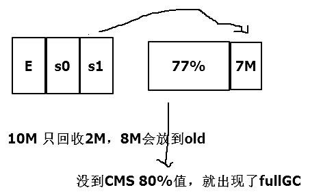
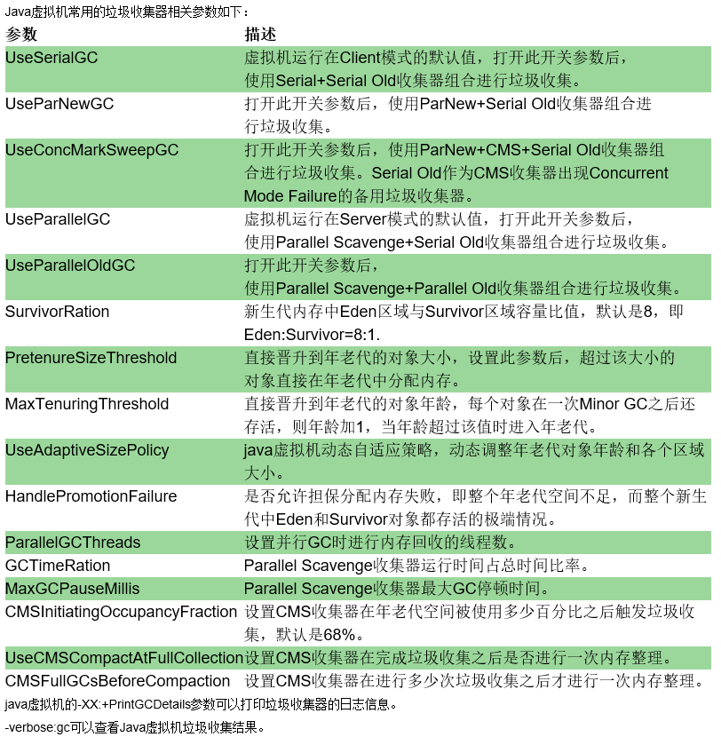
-XX:+UseCMSCompactAtFullCollection 表示在FGC之后进行压缩，因为CMS默认不压缩空间的。 -XX:+UseCMSInitiatingOccupancyOnly 表示只在到达阀值的时候，才进行CMS GC
G1收集器
G1收集器是一个并行的、并发的和增量式压缩短暂停顿的垃圾收集器。G1收集器和其他的收集器运 行方式不一样，不区分年轻代和年老代空间。它把堆空间划分为多个大小相等的区域。当进行垃圾收集时，它会优先收集存活对象较少的区域，因此叫 “Garbage First”
G1垃圾收集器（-XX:+UseG1GC) G1（Garbage First）：垃圾收集器是在Java 7后才可以使用的特性，它的长远目标时代替CMS收集器 最少堆内存 4g 才有效果
何时使用G1（-XX:+UseG1GC）
- 大内存中为了达到低gc延迟.比如:heap size >=6G,gc pause <=0.5s
- FullGC时间太长，或者太频繁。
调优参数：
G1可用的命令行选项有：
-XX:+UseG1GC——让JVM使用G1垃圾回收器
-XX:MaxGCPauseMillis=200——设置GC暂停时间目标值，缺省200毫秒。但这不是硬指标，JVM会尽力满足。
-XX:InitiatingHeapOccupancyPercent=45——整个堆被占用多少之后开始进行GC，也就是heap中45%的容量被使用，则会触发concurrent gc。缺省为45，0表示持续不停进行GC
-XX:NewRatio=n——年轻代和老年代的比例，缺省为2
-XX:SurvivorRatio=n——Eden和Survivro的比例，缺省为8
-XX:G1ReservePercent=n——保留的堆大小，减少晋升过程中出错的可能性，也就是增加可用的to-space内存，缺省是10
-XX:G1HeapRegionSize=n——G1中，堆分为大小相等的区域。这个参数设置区域的大小，缺省值取决于堆的总大小，有效取值是1M-32M。设置每个Region的大小，单位MB，需要为1，2，4，8，16，32其一，默认是堆内存的1/2000
APP_JVM_CONFIG: |-
-Dfile.encoding=utf-8
-server
-XX:+UseG1GC
-XX:+ExitOnOutOfMemoryError
-XX:InitialRAMPercentage=75.0
-XX:MinRAMPercentage=75.0
-XX:MaxRAMPercentage=75.0
-XX:+HeapDumpOnOutOfMemoryError
-XX:HeapDumpPath=/opt/logs/
GC性能指标
吞吐量：应用花在非GC上的时间百分比。 GC负荷：与吞吐量相反，指应用花在GC上的时间百分比。 暂停时间：应用花在GC stop-the-world的时间 GC频率：顾名思义 反应速率：从一个对象变成垃圾到这个对象被回收时间 。
一个交互式的应用 要求暂停时间 越少越好，然而，一个非交互性的应用，当然是希望GC负荷越低越好。
一个实时系统对暂停时间和GC负荷的要求 ，都是越低越好。
一个嵌入式当然希望Footprint越小越好。
内存容量配置原则
1 年轻代大小选择
响应时间优先的应用 ：
尽可能设大，直到接近系统的最低响应时间限制（根据实际情况选择）。在此种情况一，年轻代收集发生的频率也是最小 的，同时，减少到达年老代的对象。
吞吐量优先的应用：
尽可能的设置大，可能到达Gbit的程度。因为对响应时间没有要求，垃圾收集可以并行进行，一般适合8CPU以上的应用 。
避免设置过小。当新生代设置 过小时会导致：1.YGC次数更加频繁 2.可能导致YGC对象直接进入旧生代，如果此时旧生代满了，会触发FGC。
2 年老代大小选择
响应时间优先的应用：
年老代使用并发收集器，所以其大小需要小心设置，一般要考虑并发会话率和会话持续时间等一些参数。如果 堆设置小了，可能会造成内存碎片，高回收频率以及应用 暂停而使用传统的标记清除 方式；如果堆大了，则 需要较长收集时间，最优化的方案，一般需要参考以下数据获得： 并发垃圾收集信息、持久代并发收集次数、传统GC信息、花在年轻代和年老代回收上时间比例。
吞吐量优先的应用：
一般吞吐量优先的应用都有一个很大的年轻代和一个较小的年老代。原因是，这样可以尽可能回收掉大部分短期对象，减少中期对象 ，而年老代尽存放长期存活对象。
jvm 支持容器
r5a.2xlarge 0.286 USD
APP_JVM_CONFIG: |-
-Dfile.encoding=utf-8
-server
-XX:+UseG1GC
-XX:+ExitOnOutOfMemoryError
-XX:InitialRAMPercentage=75.0
-XX:MinRAMPercentage=75.0
-XX:MaxRAMPercentage=75.0
-XX:+HeapDumpOnOutOfMemoryError
-XX:HeapDumpPath=logs/
查看
java -XX:+PrintFlagsFinal -version | grep -E "InitialRAMPercentage|MinRAMPercentage|MaxRAMPercentage"
查看堆信息
启动时查看
java -XX:MinRAMPercentage=80.0 -XshowSettings:VM -version
说明： InitialRAMPercentage JVM 参数允许我们配置 Java 应用程序的初始堆大小。它是物理服务器或容器总内存的百分比，作为双精度值传递。注意，当我们配置-Xms选项时，JVM 会忽略InitialRAMPercentage
MinRAMPercentage参数与其名称不同，它允许为使用少量内存（小于 200MB）运行的 JVM 设置最大堆大小。容器内存总量小于200M
MaxRAMPercentage参数允许为运行大量内存（大于 200 MB）的JVM设置最大堆大小。
oom 排查
oom 原因
1. 一次申请的太多 解决：更改申请对象的数据 2. 内存资源资源耗尽未释放 解决：找到未释放的对象进行释放，可以引用池化思想 3. 本身资源不够，jvm 参数不够 解决：jmap -heap 查看堆信息 启动时查看 java -XX:MinRAMPercentage=80.0 -XshowSettings:VM -version
定位oom
找到对应代码 系统已经 oom 挂了 解决：提前设置 -XX:+ExitOnOutOfMemoryError -XX:HeapDumpPath= 系统运行中还未 oom 解决：导出 dump 文件，jmap -dump:format=b,file=pid.hprof 1460 arthas 结合 jvisualvm 进行调试 查看最多跟业务有关对象 --> 找到 GCRoot --> 查看线程栈
参考：